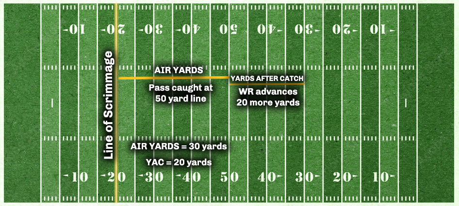

Appendix
The NFL Analytics Dictionary
Air Yards
Air yards is the measure that the ball travels through the air, from the line of scrimmage, to the exact point where the wide receivers catches, or does not catch, the football. It does not take into consideration the amount of yardage gained after the catch by the wide receiver (which would be yards after catch).
For an example, please see the below illustration. In it, the line of scrimmag is at the 20-yardline. The QB completes a pass that is caught at midfield (the 50-yardline). After catching the football, the wide receiver is able to advance the ball down to the opposing 30-yardline before getting tackled. First and foremost, the quarterback is credited with a total of 50 passing yards on the play, while the wide receiver is credited with the same.
However, because air yards is a better metric to explore a QB’s true impact on a play, he is credited with 30 air yards while the wide receiver is credited with 20 yards after catch.
In the end, quarterbacks with higher air yards per attempt are generally assumed to be throwing the ball deeper downfield than QBs with lower air yards per attempt.

There are multiple ways to collect data pertaining to air yards. However, the most straightforward way is to use load_player_stats:
data <- nflreadr::load_player_stats(2021)
air.yards <- data %>%
filter(season_type == "REG") %>%
group_by(player_id) %>%
summarize(
attempts = sum(attempts),
name = first(player_name),
air.yards = sum(passing_air_yards),
avg.ay = mean(passing_air_yards)) %>%
filter(attempts >= 100) %>%
select(name, air.yards, avg.ay) %>%
arrange(-air.yards)
tibble(air.yards)## # A tibble: 42 x 3
## name air.yards avg.ay
## <chr> <dbl> <dbl>
## 1 T.Brady 5821 342.
## 2 J.Allen 5295 311.
## 3 M.Stafford 5094 300.
## 4 D.Carr 5084 299.
## 5 J.Herbert 5069 298.
## 6 P.Mahomes 4825 284.
## 7 T.Lawrence 4732 278.
## 8 D.Prescott 4612 288.
## 9 K.Cousins 4575 286.
## 10 J.Burrow 4225 264.
## # ... with 32 more rowsIn the above example, we can see that Tom Brady led the NFL during the 2021 regular season with a comined total of 5,821 air yards which works out to an average of 342 air yards per game.
Average Depth of Target
As mentioned above, a QB’s air yards per attempt can highlight whether or not he is attempting to push the ball deeper down field than his counterparts. The official name of this is Average Depth of Target (or ADOT). We can easily generate this statistic using the load_player_stats function within nflreader:
data <- nflreadr::load_player_stats(2021)
adot <- data %>%
filter(season_type == "REG") %>%
group_by(player_id) %>%
summarize(
name = first(player_name),
attempts = sum(attempts),
air.yards = sum(passing_air_yards),
adot = air.yards / attempts) %>%
filter(attempts >= 100) %>%
arrange(-adot)
tibble(adot)## # A tibble: 42 x 5
## player_id name attempts air.yards adot
## <chr> <chr> <int> <dbl> <dbl>
## 1 00-0035704 D.Lock 111 1117 10.1
## 2 00-0029263 R.Wilson 400 3955 9.89
## 3 00-0036945 J.Fields 270 2636 9.76
## 4 00-0034796 L.Jackson 382 3531 9.24
## 5 00-0036389 J.Hurts 432 3882 8.99
## 6 00-0034855 B.Mayfield 418 3651 8.73
## 7 00-0026498 M.Stafford 601 5094 8.48
## 8 00-0031503 J.Winston 161 1340 8.32
## 9 00-0034857 J.Allen 646 5295 8.20
## 10 00-0029604 K.Cousins 561 4575 8.16
## # ... with 32 more rowsAs seen in the results, if we ignore Drew Lock’s 10.1 ADOT on just 111 attempts during the 2021 regular season, Russell Wilson attempted to push the ball, on average, furtherst downfield among QBs with atleast 100 attempts.